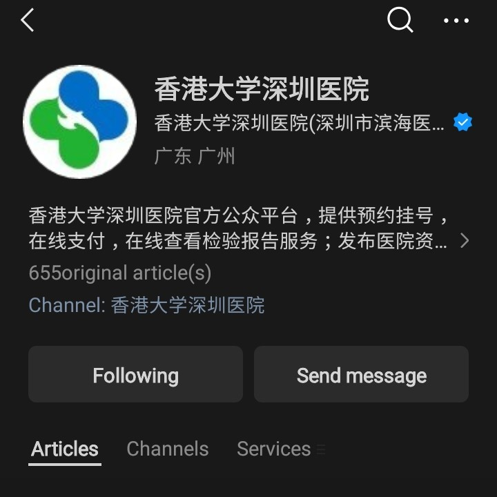
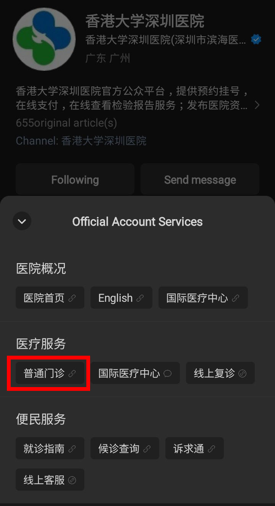
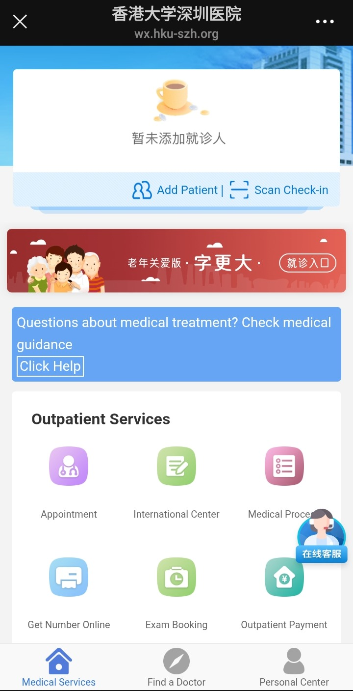
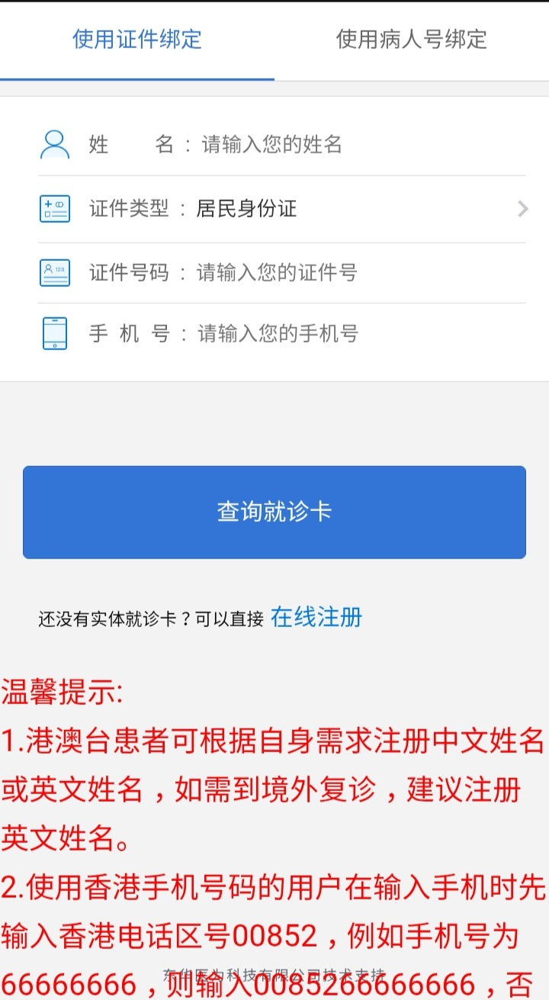
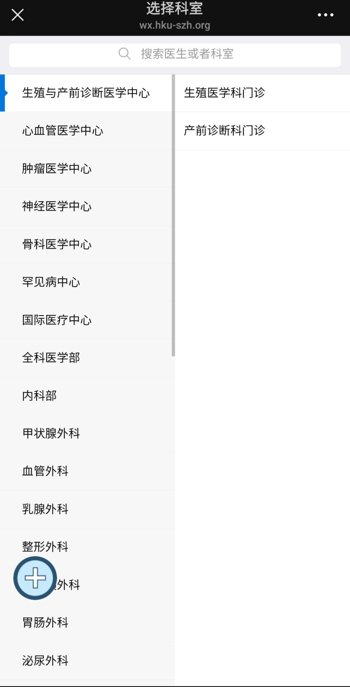
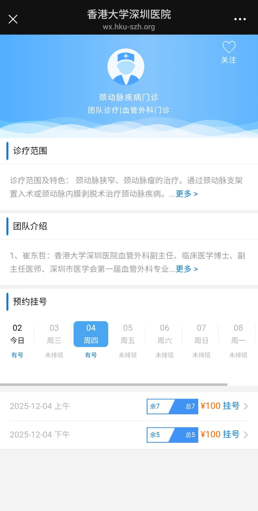
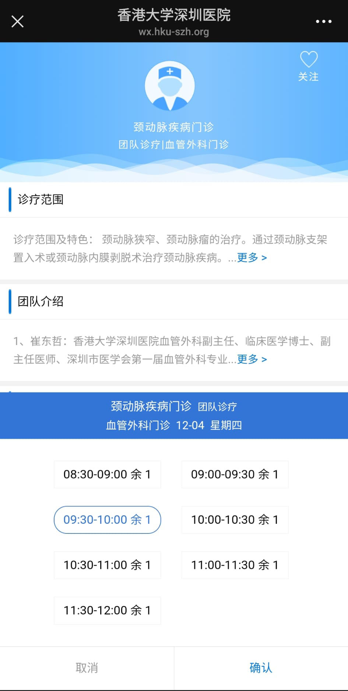
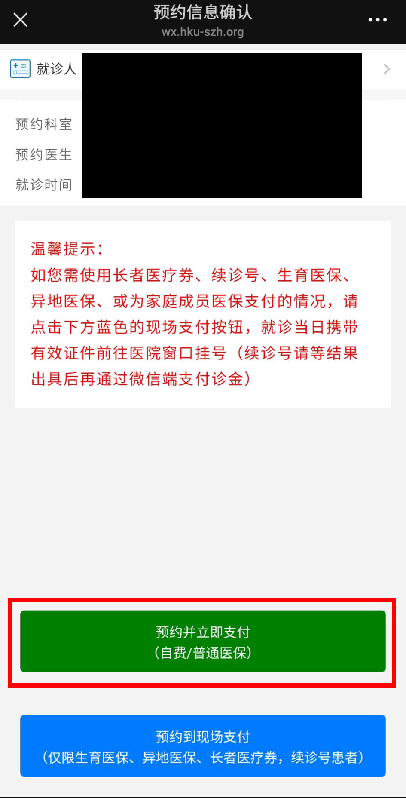

Guidelines for WeChat booking HKUSZH
Scan this QR code via WeChat and follow the account
Tap on services

Tap on 普通门诊 (general outpatient clinic) under 医疗服务 (medical services)

Tap on Add Patient

Fill in your details (Name, Identity Document, Identity Document number, phone number)

Tap on Appointment
Choose the department and subdepartment (may need to translate if can't read Chinese). Typically one needs to go the the outpatient department first

Choose an appointment date and time of day

Choose the exact time slot

Tap on the green box and pay via WeChat

General guidelines
- Try to book an appointment in the morning. Avoid evening session appointments. If the doctor suggests a procedure, the equipment might not be available in the evening and you'll have to go again on the next day.
- Once you reach the hospital, go to the outpatient department. Find a self-service kiosk, enter your details, and obtain a queue number. Afterwards wait for your queue number to be called, meet the doctor, and if prescribed, pay for and get some procedure done.
- Payment is done via WeChat. Do ensure your WeChat pay is set up for payment in the Mainland and take a data SIM along.
- The hospital is right next to the Shenzhen Bay Park Metro Station. It can be reached via metro, bus, and taxi. Some guidelines are given on this link.
- If you go early or need to wait for a while, you can wait inside the hospital or you can walk to the Shenzhen Bay Park and wait there.